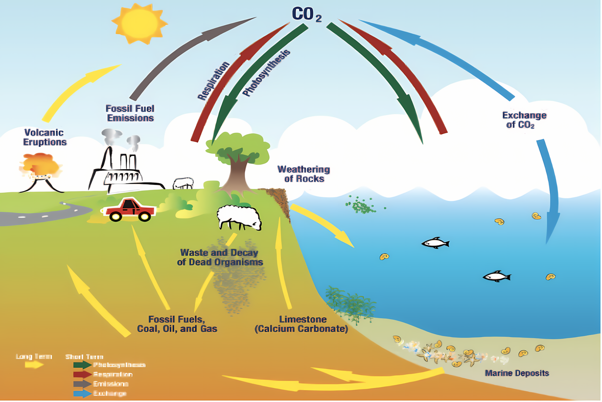

What it is: The continuous movement of carbon atoms between the Earth's atmosphere, oceans, land, and living organisms.
- Importance: Essential for life, as carbon is the backbone of all organic molecules (carbohydrates, proteins, fats, nucleic acids). It also plays a crucial role in regulating the Earth's climate.
Key Processes & Reservoirs:
- Atmosphere: Carbon dioxide (CO₂) is the main form of carbon here.
- Input: Respiration (breathing by animals), decomposition of organic matter, volcanic eruptions, burning of fossil fuels.
- Output: Photosynthesis (plants take in CO₂).
- Biosphere (Living Organisms): Carbon is present in the tissues of plants and animals.
- Input: Plants take in CO₂ during photosynthesis to produce organic compounds. Animals obtain carbon by eating plants or other animals.
- Output: Respiration releases CO₂. Decomposition returns carbon to the soil and atmosphere.
- Oceans: A large reservoir of carbon, mainly as dissolved carbon dioxide, bicarbonate (HCO₃⁻), and carbonate (CO₃²⁻).
- Input: Absorption of CO₂ from the atmosphere.
- Output: Release of CO₂ to the atmosphere. Carbon is also used by marine organisms to build shells and exoskeletons (calcium carbonate, CaCO₃). These eventually become part of ocean sediments.
- Lithosphere (Earth's Crust): Carbon is stored in rocks (e.g., limestone → CaCO₃), fossil fuels (coal, oil, natural gas), and soil organic matter.
- Input: Formation of sedimentary rocks over long periods. Accumulation of dead organic matter.
- Output: Weathering of rocks releases carbon slowly. Burning of fossil fuels releases large amounts of CO₂ rapidly. Volcanic eruptions release CO₂ from the Earth's interior.
Diagram:

Human Impact:
- The burning of fossil fuels (coal, oil, natural gas) releases large amounts of previously stored carbon into the atmosphere as CO₂, significantly increasing its concentration.
- Deforestation reduces the amount of CO₂ absorbed by plants through photosynthesis.
- These human activities are leading to an enhanced greenhouse effect and global warming.
Key Terms to Remember:
- Photosynthesis
- Respiration
- Decomposition
- Fossil fuels
- Greenhouse effect
- Carbon dioxide (CO₂)
- Carbon reservoirs
Written by Kasiban Parthipan